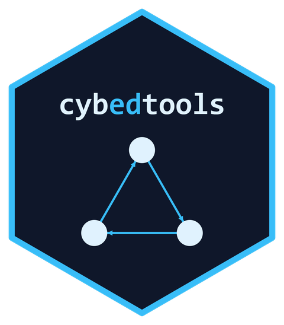

cybedtools: Cross-framework Analysis of Cybersecurity Workforce and Learning Frameworks
Source:R/cybedtools-package.R
cybedtools-package.RdEight cybersecurity workforce and learning frameworks (NICE, DCWF, SFIA,
ENISA ECSF, Cyber.org K-12, CSTA K-12 CS, ACM/IEEE CSEC2017, DigComp 2.2)
expressed in a shared cybed: semantic schema, with R helpers that query
across them as if they were one corpus. The package adds a comparison
layer over existing frameworks rather than proposing a replacement.
Use it for cross-framework curricular comparison, workforce-development
role-to-training mapping, structural coverage checks against peer
frameworks, or dissertation work that needs cross-framework empirical
claims. The package's design discipline is single-BGP SPARQL queries
with R-side joins and aggregation. See the cross-framework-analysis
vignette for worked examples.
Where to start
make_demo_graph()returns a small in-memory two-framework graph that exercises every helper without staged data. One-line sanity check after install.The
getting-startedvignette walks through loading a graph and running the domain helpers.The
cross-framework-analysisvignette shows worked findings across the full eight-framework graph.The
adding-a-frameworkvignette covers extending the package with a new framework.Function reference is grouped by family (JSON-LD construction, File I/O, RDF graph loading, SPARQL helpers, Validation).
Author
Maintainer: Ryan Straight ryanstraight@arizona.edu (ORCID) [copyright holder]
Authors:
Ryan Straight ryanstraight@arizona.edu (ORCID) [copyright holder]